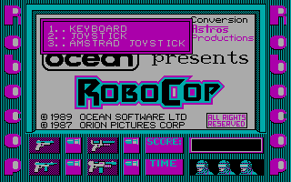
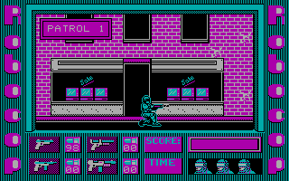

名稱：機器戰警 (RoboCop: The Future of Law Enforcement，英文版) 簡介：Ocean 1989年出品的動作遊戲，台灣由智冠代理進口 [待補]。

保護：磁片+隱藏檔 檔案：crack.rar = 破解檔 robocop_pce.rar = PCem整合版（未破解） 操作： Q = 舉槍向上 A = 蹲下 OP = 左右走（可與上下鍵合按，調整瞄準方向） Space = 射擊／拳擊 F1 = 徒手攻擊 F2 = 手槍1 F3 = 手槍2 F4 = 散彈槍 F5 = 曼塔原子砲 F7 = 暫停／繼續遊戲